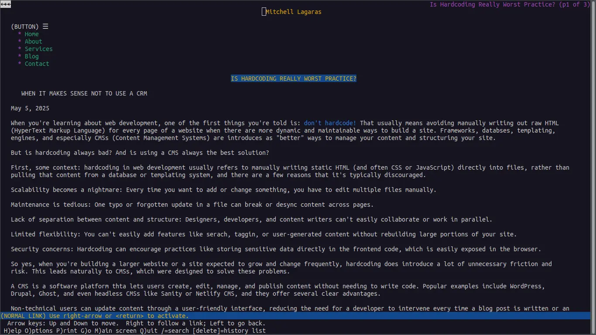

Surfing the web is an activity that has evolved since the early days of the internet in the late 80s and early 90s. Now, in 2025, the "browser wars" are belong to an era which has passed us by—the big ones have remained (Chrome, Safari, Edge, Opera, and Firefox) and I, personally, don't hear much anymore about web browser-related competition in mainstream circles. They're similar enough that it doesn't matter whether you visit Youtube via Safari or Chrome—or in its own app.
Browsing has never been easier: type what you want, point, and click. Chrome lets you know every once in a while that you need an update. No big deal, press a little button, a little this, a little that, no fuss. Seems simple enough. But if you're a minimalist at heart like me, you might wonder if browsing can get any simpler.
Lynx is the answer to that little question. Lynx is able to search the web like any other browser with one little difference: it's terminal-based. For the non-technical, that means it's text-only and you run it with a little command in the terminal, or command-line. Type "lynx", and you're off to the races.
 Screenshot of this blog running on Lynx
There's more than one terminal-based web browser out there, but Lynx has stood the test of time. As of right now, it's the oldest web browser still being maintained. It started in 1992. Things age quickly in technology; this is the grandparent of all browsers. If you want a taste of what poking around on the internet used to feel like, this is a neat way to check it out.
For people who are used to popular browsers, this might feel a little clunky at first. But, with a few (and I really mean a few) keyboard shortcuts, navigating on this simple app becomes a breeze with some charming features and some welcome benefits.
The first, and most bizarre, thing for new users might be the lack of non-text content. No images, gifs, or videos. For those of us with easy access to strong and stable internet connections, this seems like a drawback—less features equals bad. But when you think about how much time it takes even average connections to load image-saturated, ad-heavy sites, Lynx becomes a quick solution to speedy web surfing.
Instead of showing non-text elements, Lynx displays the "alt", "name", and "title" HTML attributes. For my non-techies, that simply means it shows the names that developers give these photos and videos in case they can't be found or don't load. This also means there's a lot less heavy lifting for the browser to do when pulling up a web page. When you type in a URL or make a search, you see the results—fast.
Another added benefit for web developers, or anyone like myself that's focused on making the web accessible, is how quickly you can see if something is screen-reader friendly. It shows you how web-crawlers are scanning this page, and it shows you how readable it is when you strip away the smoke and mirrors, images and fancy stylings. On websites and in emails, things are not always as friendly and charming as they appear.
In fact, the development of Lynx has continued with web-accessibility in mind. The browser's Wikipedia Article has a whole section dedicated to these efforts (including a refreshable braille display for visually impared internet surfers!). For me, it makes my job as the Accessible Email Guy easier. I can see in one glance if my emails are meeting the standards I'm claiming.
Also, while I can appreciate the minds behind the growing of web development, web browsers, and internet technologies, I love to take a step back and enjoy the simple ways it used to be done while keeping things fast and lightweight. Optimized for speed and accessibility, Lynx has become my favorite way to surf the web without the fluff and with more control.
Popular browsers typically allow you to accept or reject all cookies at once when you visit a site. Lynx lists each cookie for you and asks whether to accept, deny, or always deny individual cookies. To some, this seems unnecessary. To others, it puts them in control of their browsing.
In the spirit of Lynx's simplicity, getting started browsing is not complicated. Once you've downloaded it (everything you need to know you can probably find here), the you just need the bare minimum. Pressing "H" will bring you to the help menu for in-depth, hands-on learning. Otherwise, you can press "g" (for "go") to visit a URL or that of your favorite search engine, and press "ENTER" to search.
Beyond this, all you really need to do some browsing is a few, easy to remember commands. "SPACE" (the spacebar) will scroll down to the next page once you've read everything there is on the screen. "b" will take you back up a page. The DOWN arrow will highlight the next clickable link or button, and the UP arrow will move you to the previous one. The RIGHT arrow will click on a highlighted link, and the LEFT arrow moves you to where you were before.
This is only a brief introduction to the joys of browsing with Lynx. I've shared six commands to do some light browsing, but with over 140, you could be navigating like an old-school internet master, enjoying fast load times, total control, and a minimal, lightweight experience. It offers, in my opinion, the best way to surf the net.